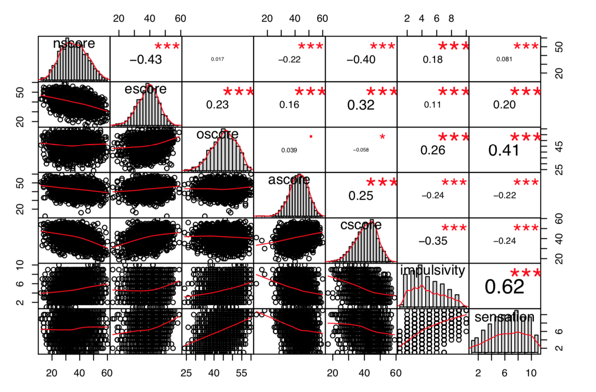
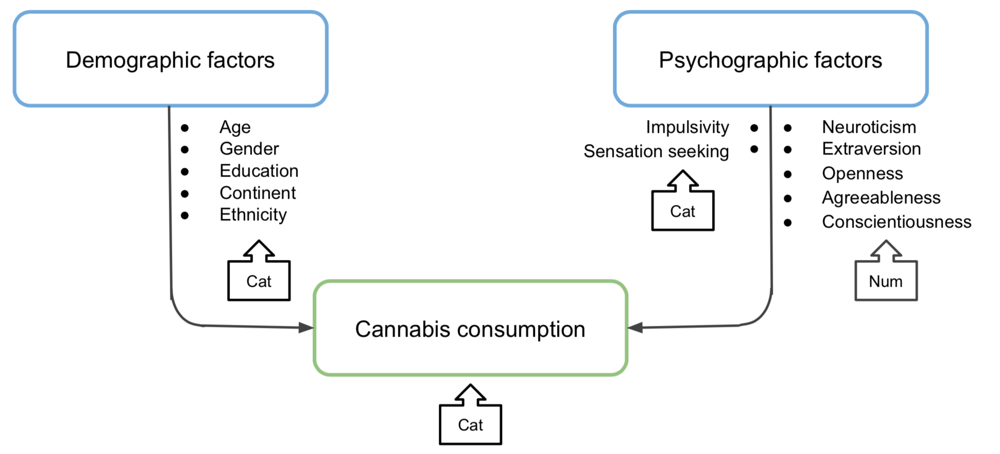
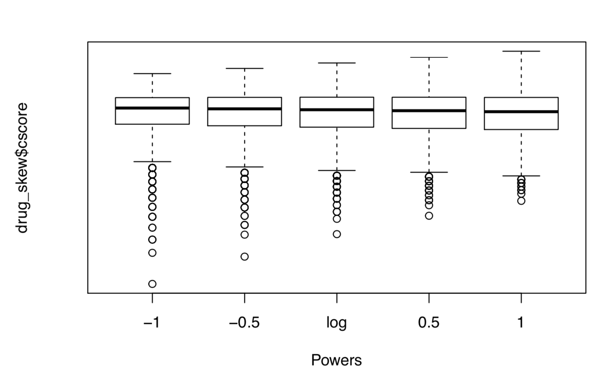

Consumer Studies


More studies to be added ⋅⋅⋅
Social Studies


More studies to be added ⋅⋅⋅
More studies to be added ⋅⋅⋅
More studies to be added ⋅⋅⋅
2019
Drug consumption survey
in English-speaking countries
in 2011-2012
12 variables
5 demographic attributes
7 psychographic traits
1885
R
tidyverse
PerformanceAnalytics
Multinomial Logistic Regression
Psychographic traits such as Neuroticism, Extraversion, Openness, Agreeableness, Conscientiousness, Impulsivity, and Sensation-seeking are analyzed along with demographic traits and finalized model with accuracy rate at 66.8%. Along the way, we mapped out the psychographic profiling of Europe and North America.
Frequent marijuana users tend to have the following traits:
⦿ Demographic: age 18-24, male, lives in North America and had some college
⦿ Psychographic: highly impulsive, more sensation-seeking, more open to try new things and less conscientious (disciplined)
The correlation chart below is to check in one frame all the traits on a matrix if there’s collinearity among traits, each train’s distribution and skewness. We do see positive correlation between openness and impulsivity and sensation seeking and a negative correlation between agreeableness and impulsivity and sensation seeking. For this project purpose, we kept them.
People in Europe are more conscientious and less sensation-seeking than people in North America.

⦿ Model 1, we looked at the demographic traits only.
⦿ Model 2, we added positive psychographic traits.
⦿ Model 3, we added negative psychographic traits.
⦿ Model 4, we added interaction factor between continent and sensation seeking traits.
Here's how the factors are groupped and mapped out as numerical or categorical.
Interaction of Europe or North America living and the sensation seeking trait is shown on below chart. In North America, more recent marijuana users are higher sensation seeking. In Europe, sensation seeking is not a strong indicator of marijuana use.

After checking on the skewness of psychographic traits, we ran a comparison of five common transformations and decided to stay with power=1, which is keeping its original form.
